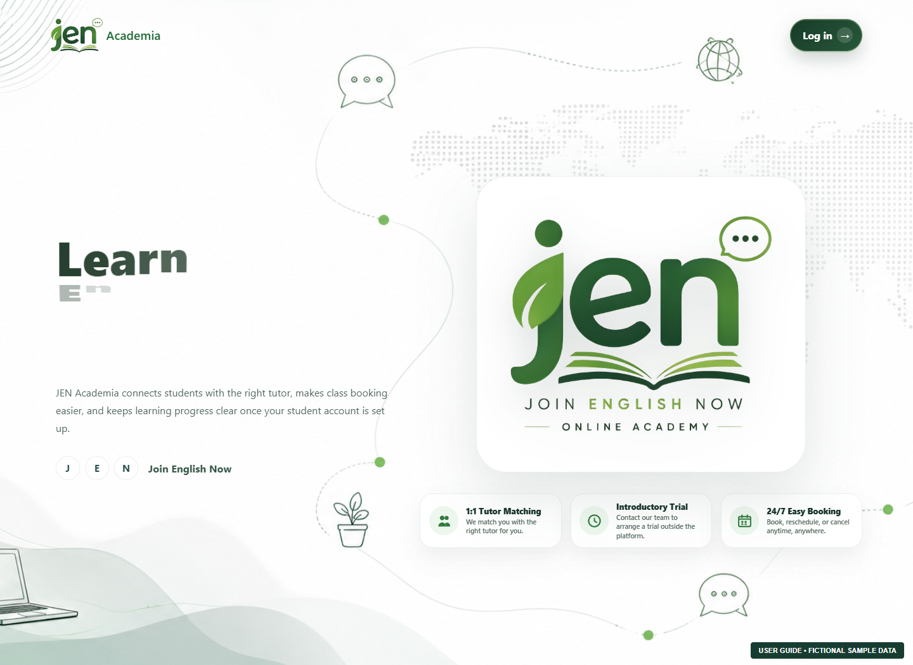
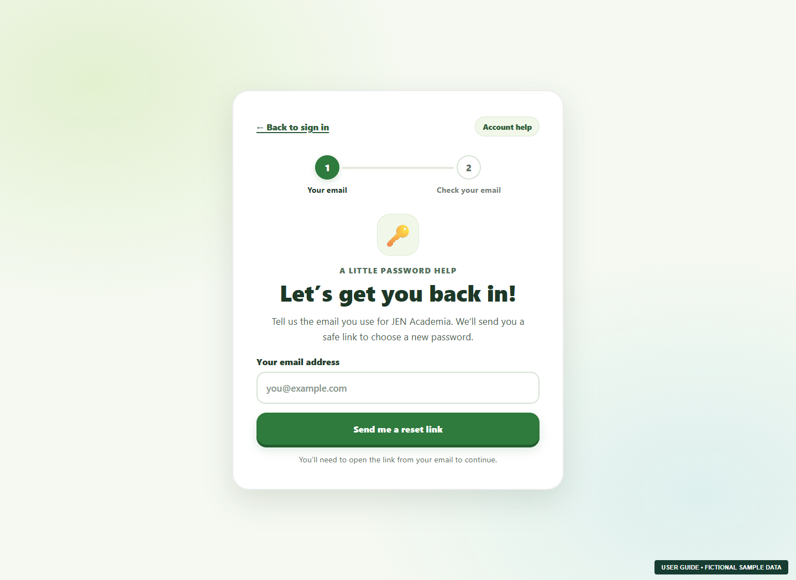

Download the printable PDF · All role manuals
Visitor
User Manual
Clear instructions for every stage.
Prepare. Follow the steps. Check the result.
Start here
Use the public website to understand the school’s services, contact the team and begin enrollment.
This manual is for visitor. Read Getting access first, then use the contents to find the task you want to complete. Each task gives preparation, numbered actions and a result to check. Bold words identify on-screen labels or important fields.
Use a current desktop or mobile browser, a reliable internet connection and access to your registered email. For online lessons, use a microphone, speakers or headphones, and a camera when needed. Allow meeting pop-ups and grant microphone/camera access when your browser asks.
| Where to go | What you do there |
|---|---|
| Home and service sections | Read course, matching and enrollment information. |
| Contact | Send an enrollment or general inquiry. |
| Sign in / Forgot password | Access an existing school-created account or recover its password. |
Edition 2.0 • 16 November 2026. This guide follows the current project interface. School-specific availability, prices, contact details and enabled integrations may vary. Pictures are locally rendered interface examples with fictional data; workflow diagrams explain sequences rather than reproduce screens.
Explore courses and the enrollment process
Read the public information before contacting the school about your needs.

Find a suitable service
Before you begin: Open the school website without signing in.
- Read the homepage and course/service sections. Compare their purposes with your learning goal.
- Review the tutor-matching explanation and the trial/enrollment process. Note questions about course level, schedule and package terms.
- Find the contact information or Contact section and ask the school to confirm current availability and arrangements.
Check your result: You have a shortlist of learning needs and a clear next step for contacting the school.
Send an inquiry
Give the school enough information to answer you without sending sensitive credentials.
Submit the contact form
Before you begin: Have a working email address and a short explanation of your request.
- Open the Contact section on the website. Enter your name and valid email address.
- Write your message, up to 2,000 characters. For enrollment, explain the learner’s goal, course interest, preferred schedule and timezone.
- Complete any anti-bot check shown. Review your email so the school can reply.
- Submit once and wait for the result. If a delivery error appears, use the displayed school contact channels or try again after checking the form.
Check your result: A successful response confirms the inquiry submission. Wait for the school’s reply to your email.
If you need help: Repeated submissions may be rate limited. If you have sent several inquiries, wait before retrying; the default contact limit is ten requests in 15 minutes.
Example inquiry: “I am interested in conversational English for work. I can study on Tuesday and Thursday evenings, Asia/Manila time. Please advise about assessment, available teachers and package options.”
From inquiry to your first account
The school completes the enrollment and account-creation steps before you can use private learning pages.
Complete the enrollment handoff
Before you begin: The school has responded to your inquiry.
- Confirm course goals, trial/assessment arrangements, schedule expectations and package terms directly with the school.
- Provide the required identity/contact information through the school’s approved process. Confirm the email address that will be used for your account.
- Wait for the administrator-created account and its setup invitation. Open the newest email and follow the setup link.
- Choose and confirm an initial password of at least eight characters. Complete the setup form and sign in.
- Use the separate Student or Teacher User Manual for profile completion and role-specific tasks. Students also complete LINE linking.
Check your result: You have an activated account and the correct role manual for normal use.
If you need help: Invitations normally expire after 24 hours and are single use. Ask the administrator for a fresh invitation if it is missing, expired or already used.
Sign in or recover an existing account
Existing users enter with the email registered by the school.

Access your existing account
Before you begin: You already have a school-created account.
- Open the sign-in page. Enter the registered email and password, then submit.
- If you forgot the password, open Forgot password, enter that email and send the request.
- Check inbox and spam. Open the newest reset link within one hour, enter/confirm a new password and submit.
- Return to sign-in and use the new password. Continue with your role’s manual.
Check your result: You reach the appropriate role workspace.
If you need help: The reset response does not reveal whether an email is registered. A new reset request replaces older unused links. If mail does not arrive, ask the school to confirm your registered email.
Troubleshooting and support
Use the symptom to choose a next action. Preserve the exact message when reporting an issue.
| Problem | What to do |
|---|---|
| Cannot sign in | Check your full email, password and keyboard settings. Wait if temporarily locked; use password recovery. Ask the school about archived accounts. |
| Setup or reset link fails | Open the newest email. Ask for a fresh setup invitation or request a fresh password reset; older links may have expired or been replaced. |
| Sent back to Account or Contract reviews | Complete the required profile, closing review before continuing. |
| Times look wrong | Compare the timezone in Account and the timezone shown in the class details. Correct the profile timezone and reopen Calendar. |
| A page or upload does not finish | Check connectivity, file format and file size. Confirm whether the action succeeded before retrying. Reopen a stale protected file link from its source page. |
| Cannot find a registration button | Contact the school. Student and teacher accounts are created by an administrator after the enrollment/onboarding process. |
| No reply to an inquiry | Check spam and the email entered in the form. Use the school’s published contact details to follow up; avoid repeated rapid submissions. |
Report a problem clearly
Before you begin: Use school contact information from the website or an available administrator chat.
- Record the affected page, the action you tried, the exact error message, and your local date/time and timezone.
- Include the class, assignment, contract or book identifier/name when available. State the expected result and what actually happened.
- Attach a screenshot with passwords, private messages, invitation/reset links and other people’s personal information hidden.
- Ask the school to confirm the record before you repeat an approval, booking, submission or other change.
Check your result: Support has enough information to locate the issue without receiving your credentials.
Useful terms: A contract/package is an allowance of classes with a duration and expiry. A reservation holds a class allowance for an unresolved booking. An archive hides or disables a record while preserving its data. A review is a closing evaluation, separate from per-class remarks.